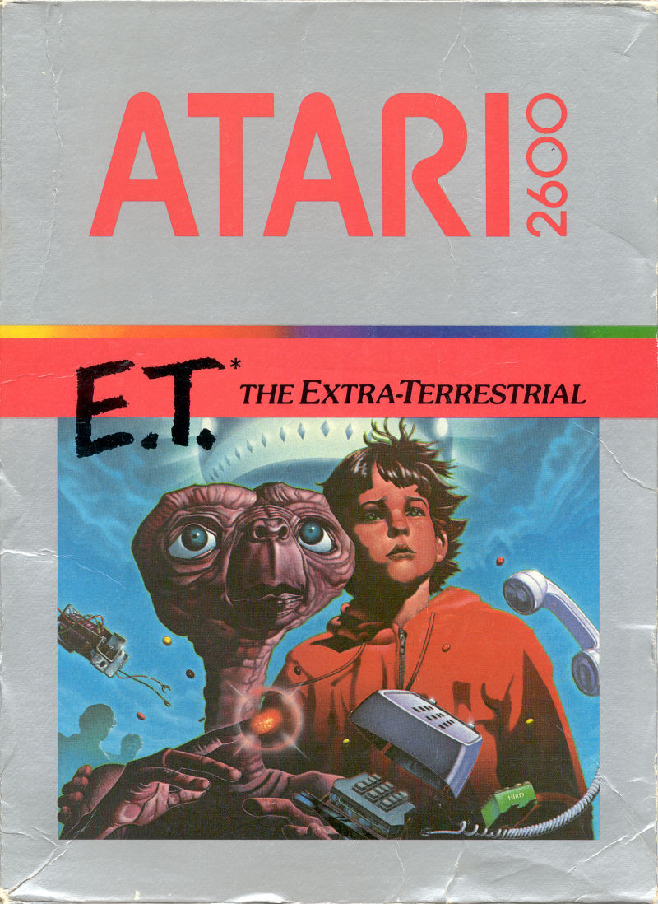

|
Développé en seulement cinq semaines par Howard Scott Warshaw d'après un concept original dont il est l'auteur, le jeu reçoit un accueil mitigé par la presse spécialisée lors de sa sortie, qui le juge destiné uniquement aux très jeunes joueurs. |
|
Tristement célèbre pour avoir été produit massivement avant d'être un fiasco
total puis enseveli dans le désert du Mexique (pour être redécouvert il y a quelques années),
ce jeu sur Atari est un exemple parfait des licences exploitées pour l'argent.
|
© Developer: Atari, Inc. / Publisher: Atari, Inc. / Platform: Atari 2600 / Genre: Adventure / Release NA: December 1982
Retour en haut de la page